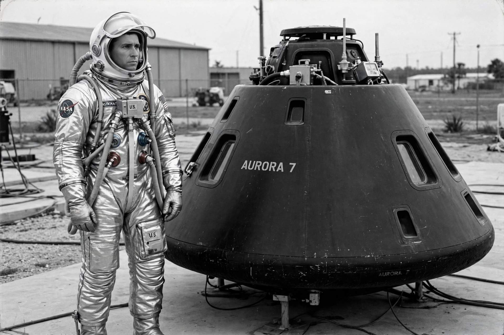

John Glenn
From Wikipedia, the free encyclopedia

Glenn and Friendship 7, 1962.John Herschel Glenn Jr. (18 July 1921 – 8 December 2016) was an American astronaut, Marine Corps fighter pilot and United States Senator. On 20 February 1962, aboard Friendship 7, he became the first American to orbit Earth, circling the planet three times during a flight of just under five hours in Project Mercury.
A decorated combat pilot of the Second World War and Korea, and a record-setting test pilot who made the first supersonic transcontinental flight across the United States in 1957, Glenn was one of the original Mercury Seven astronauts. During his orbital flight a telemetry signal falsely suggested his heat shield had come loose; controllers kept his retropack attached during re-entry as a precaution, and Glenn watched flaming debris — actually pieces of the retropack — stream past his window.
Senator and second flight
Glenn served as a Democratic senator from Ohio from 1974 to 1999. On 29 October 1998, at age 77, he flew aboard the Space Shuttle Discovery on mission STS-95, becoming by far the oldest person to fly in space — a record he held until 2021. He remains the only person to have flown in both the Mercury and Shuttle programmes.